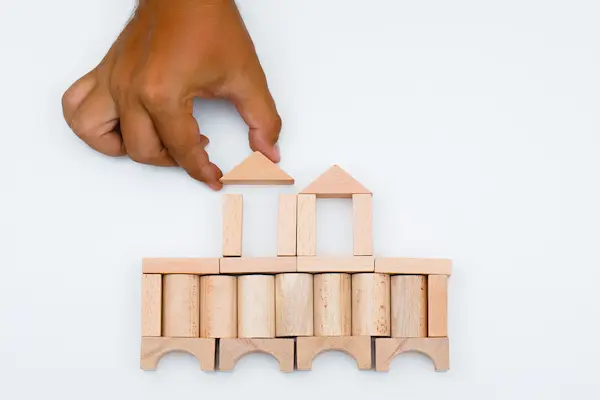
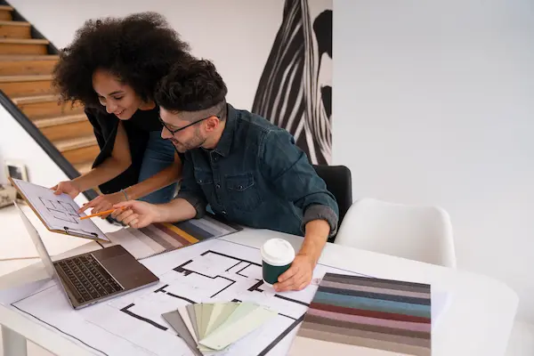

Site Purpose
This website is a hub for landlords and property owners in Ikeja to get information, updates, tools, and support.
Example Scenarios
Access legal tips, find plumbers, connect with fellow landlords, and more.

Color Scheme
The color palette features earthy tones — green for growth, brown for stability, and white for transparency. This reflects community, trust, and openness.
